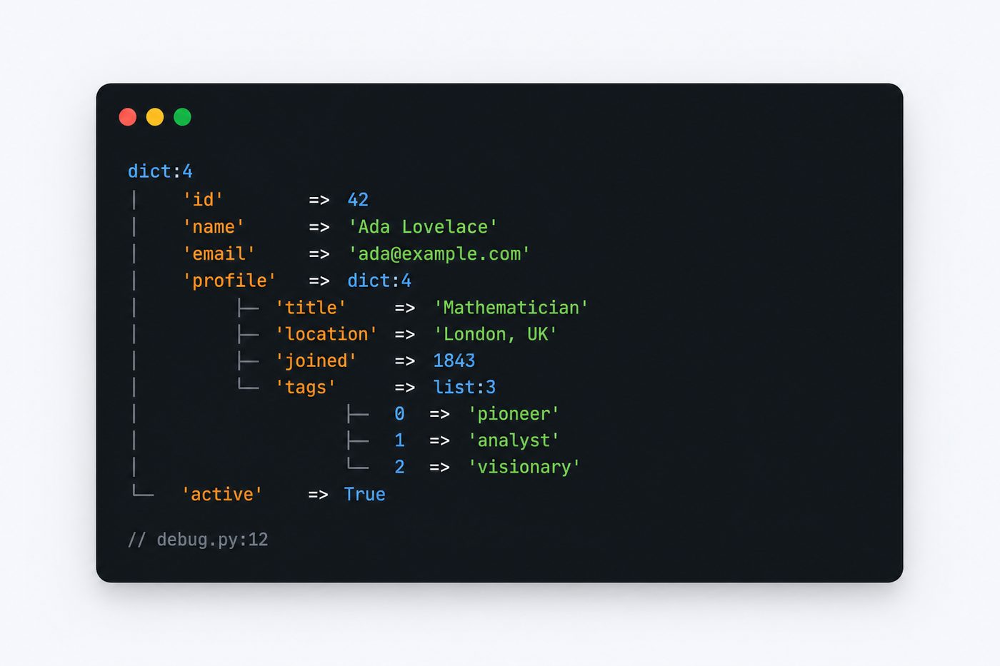
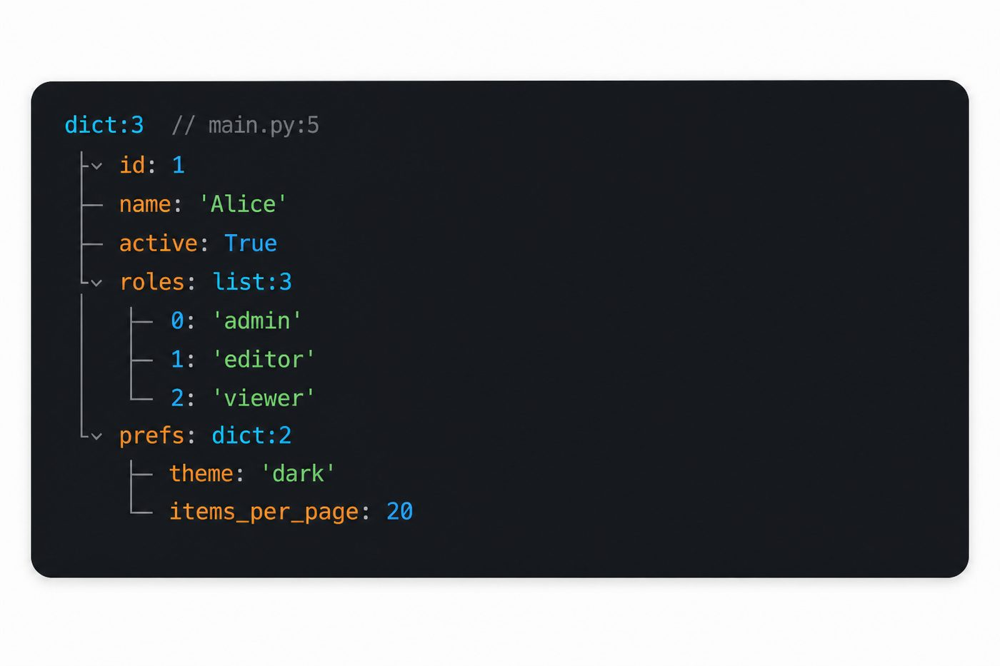
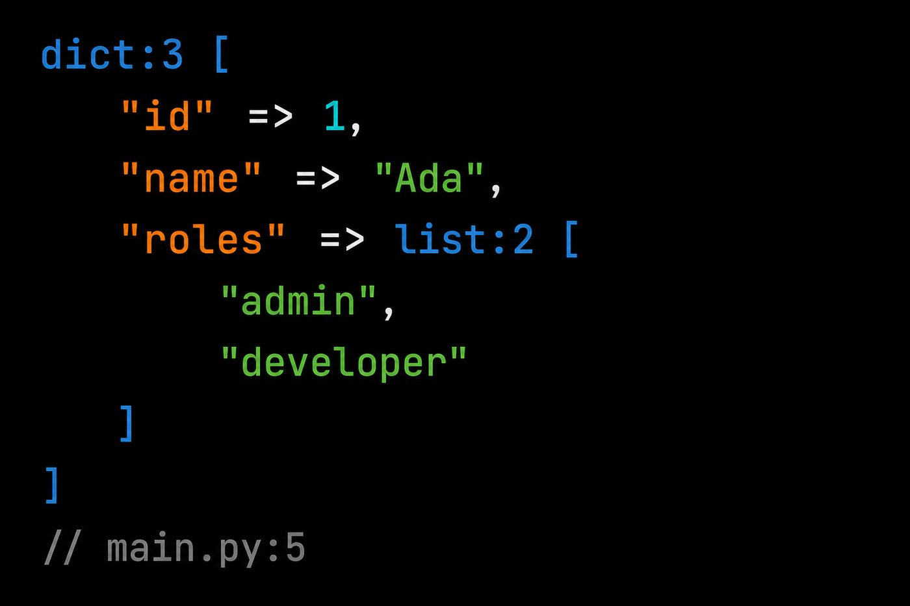

pydump¶
دامپ و توقف ساختاریافته برای اسکریپت و CLI پایتون. فقط stdlib. بدون مرورگر و فریمورک وب.

استک¶
برای پایتون خام. HTML در مرورگر میخواهید؟ از pydd استفاده کنید.
-

فقط stdlib — اسکریپت، تست، CI
-
دامپ HTML برای FastAPI · Flask · Django
-
نصب
pip install pydump-dd -
شروع سریع
دامپ یک dict در سه خط.
-
PyPI
نام بسته:
pydump-dd -
گیتهاب
سورس، issue و مشارکت.
مثال سریع¶
import pydump # dd/dump به builtins
user = {"id": 1, "name": "Ada", "roles": ["admin", "editor"]}
dump(user) # stderr، ادامه اجرا
dd(user) # stderr، سپس خروج 1
پیشنمایش زنده¶


HTML / فریمورک وب میخواهید؟¶
pydd — pydump + دامپ HTML برای FastAPI، Flask و Django.
| نیاز | بسته | PyPI |
|---|---|---|
| فقط ترمینال | pydump | pydump-dd |
| اپ وب | pydd | pydd-web |
مجوز¶
MIT — مخزن گیتهاب.